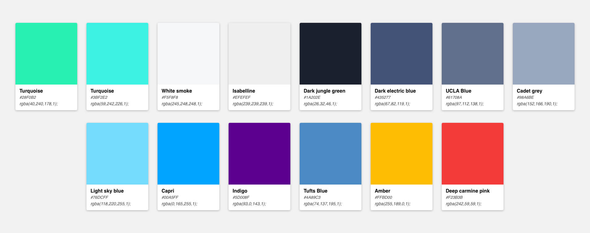

Me and my colleague Matti love working on side projects in our spare time. We created an app called Sock (securely lock) which lets users store images securely, locally and password protected on their mobile phone. When releasing the app we knew we would have some monthly recurring costs for things like the server infrastructure. We wanted to keep our app completely free so creating a paid version wasn’t an option and in-app ads seemed like they would have too much of a negative impact on the user experience. One of the other ways to fund our efforts that came to mind was crowdfunding. We looked for tools online that would help us crowdfund for our app but unfortunately we couldn't find any. We figured we couldn’t be the only ones who need a tool like this and decided to build our own.
Brand & Design / Januari 2019 - Present
We made Donny.fund to allow ourselves and others to fund their apps using crowdfunding so they can keep their apps free and don’t have to rely on alternative less ideal business models like ads. When we started the build process the first thing we did is brainstorm and come up with some goals to define what Donny.fund should enable people to do:
Have your community fund your project or feature.
Be flexible about how much is donated to keep the barrier to donate as low as possible.
Allow users to suggest new features that can be upvoted so makers get a good feel of what their community wants and how much they want it. This way Donny cannot just be used to fund projects and features but also to close the gap between creators and their users.
To come up with the name we simply picked a few words out of our mind map: Donation, Money and Funding. You probably already see where this is going: we combined the words Don(ation) and (Mon)ny which became Donny and we discovered that there was a .fund domain available which we could use. And that's how the Donny.fund name came to be.
We went with green as the primary color because of its relation to money. It also is generally associated with safety and growth, reliability and non-profit which makes it perfect for a donation platform. The entire product needed to feel light and open, allowing users to feel safe when donating to their favorite product, knowing it would help their creators to improve the product for them. That's why we came up with the following colors: backgrounds should be light or light grey to feel open, the texts would be blue grey and the accent colors should be green/blue turqoise. We also added a few more prominent colors for error/warning and info pop-ups.
We used Comfortaa as our main font. It needed to feel friendly and modern so we went with this rounded sans-serif font. However we discovered that when we used this font for longer texts it wouldn't read well, so we had to add a secondary font for longer texts (Blog posts). We decided to go for a serif font like Medium does for their articles (they would have done the research for it since articles are their main focus), when testing fonts on readability I decided to go with Noto Serif.
Creators needed to be able to create features and assign a financial goal to them based on the cost involved in developing it. The community can then fund these features and when the goal has been reached it would be picked up for development.
The community would also be able to leave feature suggestions and upvote features so that the creators know what features the community would like to see and to get a good sense of what features are in highest demand. Creators can then add a financial goal to a suggestion so it becomes ready for funding.
After defining our brand and what our features included it was time to create the MVP. We created a portal for our creators where they can: add projects, features, a project logo, donation goals and oversee their incoming donations. To allow the community to donate money we needed a publicly available donation page for them on which they would be able to see all projects and features available for funding. When a creator adds a new project with features, the portal will automatically generate a donation page and give them a link which they can share with their community.
The one missing piece that we still had to decide on was which payment provider to use. We looked at different providers like Stripe, Mollie, Adyen, the one Patreon is using and decided to go with Stripe as it allowed us to automatically pay our creators bi-weekly. Additionally, from an engineering standpoint the integration of Stripe would save us quite a bit of development time compared to some other providers. When comparing them on transaction fees, usability and flexibility stripe seemed to be the best fit as well.
Some of the pages I worked on for the website and portal:
We're currently close to finishing the MVP and couldn't be more excited to release it into the world very soon. We have a lot of ideas laying around for our next set of releases like creating widgets that allow our creators to ask for funding within their products and for which they can modify the branding, releasing a React Native app for creators to manage their projects and features that are currently open for funding.
Some of the app and email pages I worked on


Code coverage is one of the most important metrics companies rely on to ship healthier code, faster, and with less risk.
Project Date: 2019 - 2022
Design: UI / UX / Marketing
Location: San Fransicso (CA) US
Blackdove is on a mission to connect the world in a shared art experience. Art can now be viewed in an authentic way by a global audience.
Project Date: 2016-2019
Design: All
Location: Miami (FL), US
The programmable network edge that adds connectivity, security, and observability to your apps with no code changes.
Project Date: 2021-2022
Design: Marketing
Location: San Diego (CA), US
Bringing great ease to the real estate closing process through innovative technology, consistent processing, and competitive pricing.
Project Date: 2021
Design: Branding
Location: Nashville (TN), US
Customer engagement built on your data warehouse. Connect data, create rich segments, and engage customers across any channel.
Project Date: 2021
Design: Logo, Product
Location: Menlo Park (CA), US
We make saving for your first home more simple. So whether you’re at square one, or already on your way, we can help you get your keys in record time.
Project Date: 2020
Design: Motion Graphics
Location: Glasgow, Scotland
Our blood tests give you health insights, actionable support, and GP advice. Find out what’s happening inside your body from the comfort of your home.
Project Date: 2020
Design: Motion Graphics
Location: London, England
Donny is a crowdfunding for software platform. It’s a concept to get funding by your community and get feedback from your user-base.
Project Date: 2019
Design: All (personal project)
Location: The Netherlands
This React Native app let's you save your images securly and privately on your mobile phone. We've created this project within 1 month.
Project Date: 2018
Design: All (personal project)
Location: The Netherlands